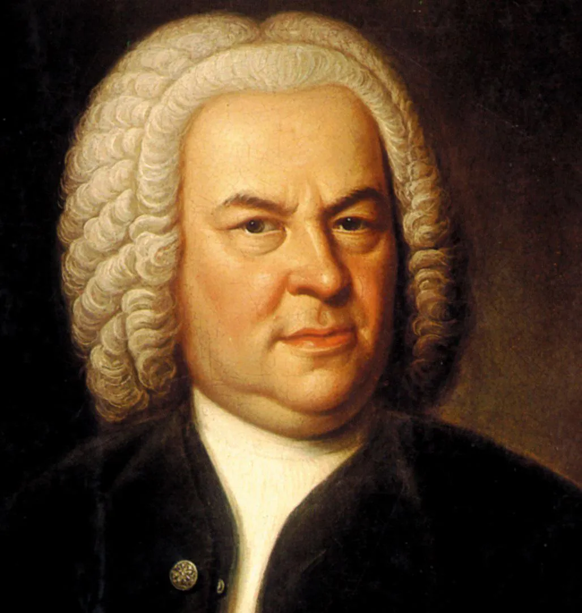

巴赫

约翰·塞巴斯蒂安·巴赫（Johann Sebastian Bach，1685—1750）出生在德国的一个音乐世家。 在巴赫家族从16世纪开始，经历了260多年，共7代人，成为音乐家的有78人，比较有成就的有42人， 其中最有名的就是J·S·巴赫，也就是我们最熟悉的那个“巴赫”。
其创作分为以下几个时期。
一、魏玛时期
巴赫1685年爱森纳赫出生，从小和父亲学习小提琴和中提琴。在巴赫9岁和10岁的时候，他的父母相继去世， 可怜的小巴赫就到了奥尔德鲁夫和他大哥住在一起，并且和大哥学习键盘器乐。
15岁时，巴赫来到吕内堡学习，并且参加了学校的唱诗班，同时学习管风琴。18岁时，巴赫在魏玛宫廷当了5个月的宫廷乐师后， 到了阿恩施塔特新教堂担任管风琴师。同时，这一时期巴赫开始创作管风琴曲，也收学管风琴的学生。22岁时，巴赫到米尔豪森的圣布拉修斯教堂担任管风琴师。 同年，与他的远房堂妹玛利亚·芭芭拉结婚。23岁时，巴赫从圣布拉修斯教堂辞职，重新回到了魏玛宫廷，当管风琴师。
在这期间巴赫创作了不少管风琴曲，其中包括《18首众赞歌前奏曲》、《管风琴小曲集》和各种前奏曲、幻想曲、托卡塔与赋格等。29岁时，巴赫被任命为宫廷乐队的指挥。
我曾有很多苦恼（Ich hatte viel Bekümmernis）
二、科滕时期
在1717年，巴赫32岁的时候，巴赫离开魏玛宫廷，去了科滕宫廷任职。在1718—1723年，巴赫在这里担任乐队指挥，由于亲王喜欢世俗音乐， 所以巴赫这一时期创作主要集中在世俗器乐上，其创作了《平均律钢琴曲集》第一卷、《无伴奏小提琴奏鸣曲》、《布兰德堡协奏曲》等经典作品。
《平均律钢琴曲集》第一卷出版于1722年，与《二部创意曲》、《三部创意曲》，以及后来的《平均律钢琴曲集》第二卷一样，都具有一定的教学目的。 同时，它总结了前人作曲家们对复调音乐的创作艺术。还有一个目的就是，向世人展示运用十二平均律可在任何一个调上自由转换。 《平均律钢琴曲集》在音乐技巧上无与伦比，而且充满了内涵，因此被后人称为“钢琴家的《旧约全书》。”
巴赫 平均律钢琴曲 No. 1 BWV846 C 大调前奏曲
1721年，巴赫收集了他6首最好的协奏曲先给布兰登堡的克里斯蒂安·路德维希侯爵，这就是著名的《布兰登堡协奏曲》。巴赫当时把这些最好的作品贡献出来， 其实主要是为了寻求一份在柏林的工作，同时也是为了展示其大协奏曲的创作才能。大协奏曲在前文中我们讲过，是一组独奏者和乐队的“竞奏”，巴赫将大协奏曲的创作向前推进了一大步， 比如：他的作品的规模要比以前的大协奏曲要大；丰富了乐队的配器；加强了音乐的对比；使用高超的复调技巧；木管乐器的运用十分突出。等等。
此外，《无伴奏小提琴奏鸣曲》在这一时期的创作中也很有代表性。
三、莱比锡时期
在1723年，巴赫38岁，巴赫离开了科滕，到了莱比锡，担任托马斯教堂附属学校的乐监和莱比锡市的音乐指导，此后的27年，巴赫就没有离开莱比锡。巴赫在这一时期，需要负责教堂的音乐工作， 也需要对学校的学生进行音乐培训，同时还要负责政府仪式庆典的音乐作品。他为了满足其服务的路德派教会的需求，每个主日都要创作一首新的康塔塔，巴赫在这一时期创作了大量的康塔塔，现存巴赫作品中，有两百多首康塔塔，占了他作品的一半。他的康塔塔的特色是运用了众赞歌的曲调。 比如他的第80首康塔塔《我们的上帝是坚固的堡垒》就运用了马丁·路德作品的曲调。
同时，他也需要为复活节等节日创作受难乐，他主要创作了两部受难乐，《约翰受难乐》和《马太受难乐》，这两部作品将受难乐这种体裁推向了新的高峰。 有学者甚至认为，《马太受难乐》是“现存宗教音乐”的巅峰。
马太受难曲
《马太受难乐》是根据《圣经》的《马太福音书》的第26、27章对基督受难过程的叙述，包括78首分曲，总谱要求庞大的双合唱队和乐队。巴赫基于原来受难乐的创作特点上， 在《马太受难乐》中经常使用同一主题运用不同的调式调性和歌词，贯穿整个作品，全曲充满了肃穆和庄重，将其音乐创作的经验都运用其中。
在莱比锡工作的后期，巴赫开始在莱比锡大学音乐社作音乐指导，经常能演奏和指挥他自己的作品，所以在这一时期，巴赫放飞自我，创作了很多世俗作品。 在1733年，巴赫将自己的《b小调弥撒》中的“慈悲经”和“荣耀经”献给了德累斯顿的萨克森选帝侯，以争取宫廷作曲家的头衔。
在这一时期，巴赫的创作风格开始有些变化，他对“古代风格”似乎更有兴趣，他开始研究、抄写、改编文艺复兴时期的音乐作品，并对自己的创作进行反思。这些创作理念，体现在他的《哥德堡变奏曲》、《音乐的奉献》、《赋格的艺术》中。
1742年，巴赫以《键盘练习》第四卷为标题，出版了他的《哥德堡变奏曲》。这部作品是为俄国驻德累斯顿大使的要求创作的。主题是一段萨拉班德舞曲风格的曲调，随后是30个变奏，类似于组曲，风格华丽，技巧复杂。 同年，巴赫还创作了一首世俗康塔塔《农民康塔塔》，从中可以看出，他的创作不再受到宗教限制，而是在民间寻找音乐来源。
1747年，巴赫受到腓德烈大帝的要求，访问柏林皇家宫廷。大帝给巴赫出了一个主题，要求他根据这个主题即兴创作卡农和赋格来。巴赫成功的完成了，让在座的各位都服了。然后巴赫发现这个主题很美，在加工整理后，用《音乐的奉献》为标题，编成了一册乐谱，连同一封信，呈送给大帝。 这部作品包括1首利切卡尔、1首三重奏鸣曲及10首卡农，彰显了巴赫炉火纯青的复调技巧。
巴赫从40年代中期开始创作《赋格的艺术》，但还没等创作完，便去世了。巴赫在这部作品中，对巴洛克时期的赋格进行了最后的总结。作品由15首赋格组成，以一个简单的主题为基础，充分的探索了赋格创作的各种可能。巴赫死后，他的儿子整理和出版了未完成的修改稿， 并且在曲尾增加了巴赫的管风琴众赞歌《走向主的神坛》，以让作品有一个完满的结尾。
巴赫死后，古典主义音乐风格兴起，大家普遍忽视了巴赫的音乐。直到1829年，德国作曲家门德尔松在柏林指挥上演了《马太受难乐》，人们才认识到巴赫音乐的价值和他在历史上的地位， 由此巴赫的音乐得到广泛而深入的传播。
整体来说，巴赫是一个十分伟大的作曲家。他不像同时期的亨德尔获得了很高的地位，走访过很多国家。巴赫一生都在德国，往返于德国各地的宫廷、教堂、学校之间，为了能让自己的音乐创作更加成功，他十分善于抓住各种机会，以体现自己的创作才能。康塔塔、受难乐、复调音乐、大协奏曲等体裁， 在巴赫的手中发展到了一个新的阶段，这些创作为古典主义音乐的到来奠定了基础。